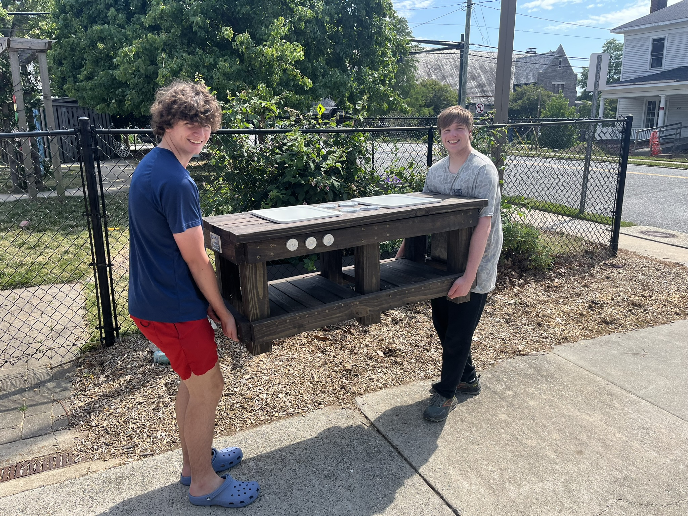
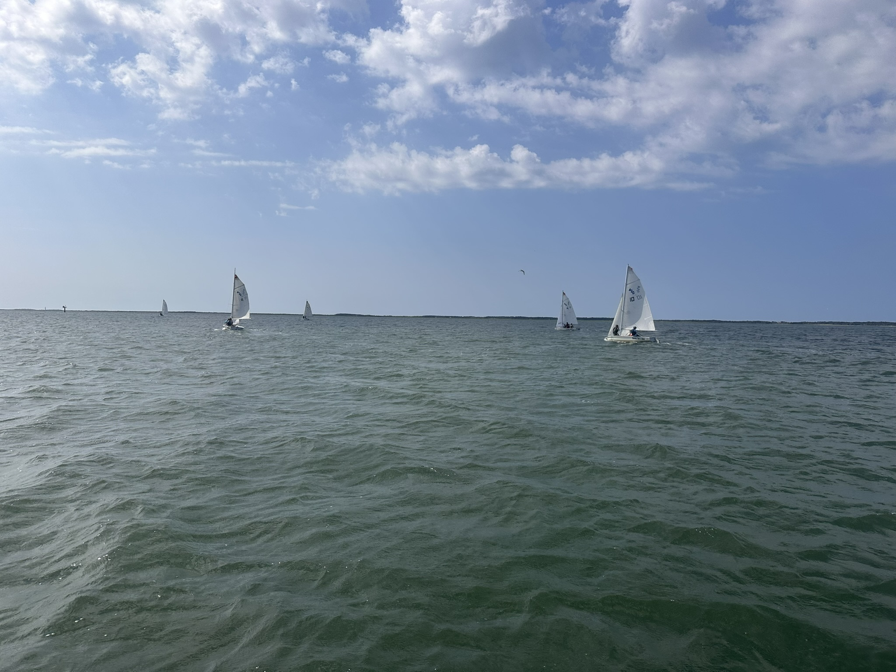
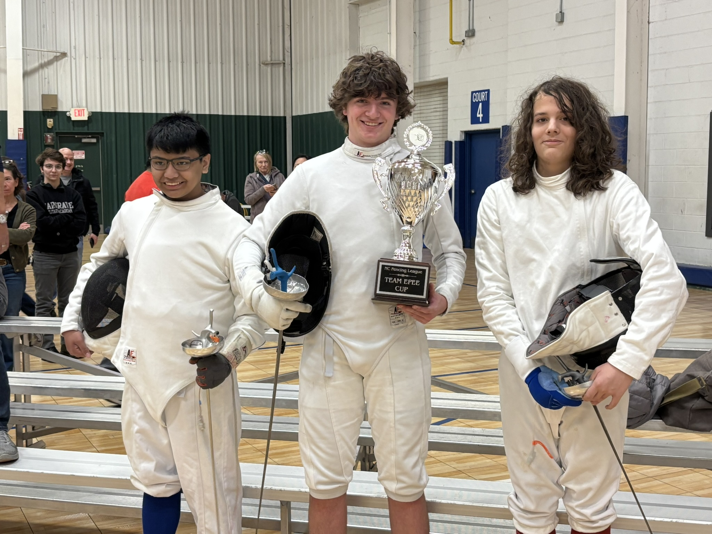
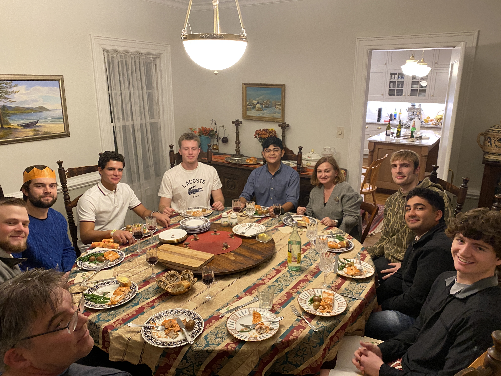

Other interests
A few other
things I do.
Teaching, competing, and making things for the people around me.

Eagle project: a mud kitchen
I designed and built a mud kitchen for a local preschool after its previous one rotted away. The new design uses six sturdy 4×4 beams and pressure-treated wood.
I also designed and printed the knobs and burners in Blender. It brought together the planning, construction, and modeling work I enjoy in one project for the playground.

Teaching sailing.
At the North Carolina Maritime Museum, I planned and taught lessons for more than 200 students ages 8–16, managed junior instructors, and operated powerboats.
I hold US Sailing Level 2 certification. Teaching means paying attention to what each student needs, while keeping the whole group moving.

Fencing
I’m a varsity team captain in the North Carolina Fencer’s League. Our team won regional championships in 2024, 2025, and 2026, and I won individual and team state championships in 2025.
I’ve earned a USA Fencing D rating and tutor teammates twice a week.

Economics & community
As a microeconomics TA at Guilford College, I grade assignments and tests, host office hours, and helped create a study-session system before tests.
I also serve as treasurer of Market Minds, helping organize finance education and community outreach events. I organized a real-estate research event, and founded a neighborhood ecology club to clean a local park.